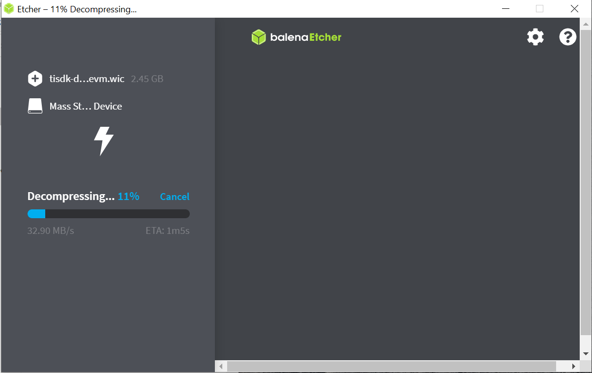

1.1.3. Create SD Card¶
1.1.3.1. Overview¶
This section provides guides to create SD cards for the following use cases:
Create SD cards with default images:
Create SD cards with custom images:
1.1.3.2. Create SD Card using balenaEtcher¶
Download the default bootable SD card image (WIC file) available on the release page as tisdk-adas-image-<machine>.wic.xz.
Download and install the balenaEtcher tool:
Balena Etcher is an open-source utility that can be installed on both Linux and Windows. Download the tool from this link and install it.
Flash the WIC image to the SD card:
Insert a micro SD card into the USB SD card reader and start Etcher.Choose the default WIC image to be flashed, choose the USB SD card reader as the target, and then click “Flash”. Etcher will decompress the image and write it to the SD card, as shown below:
1.1.3.3. Create SD Card using bmap-tools¶
Download the default bootable SD card image (WIC file) available on the release page as tisdk-adas-image-<machine>.wic.xz.
Decompress the tisdk-adas-image-<machine>.wic.xz to tisdk-adas-image-<machine>.wic
For Linux:
cd <PSDK_PATH>/filesystem unxz tisdk-adas-image-<machine>.wic.xz
Flash the WIC image to SD card
For Linux:
First, make sure that the SD card is unmounted. You can use lsblk to inspect whether the SD card partitions have a MOUNTPOINT. If the SD card is mounted, use umount to unmount the partitions.
For example, if lsblk returned this:
$ lsblk NAME MAJ:MIN RM SIZE RO TYPE MOUNTPOINT : : sdc 8:32 1 15G 0 disk ├─sdc1 8:33 1 131.8M 0 part /media/localUser/boot └─sdc2 8:34 1 765.9M 0 part /media/localUser/root
Then we would want to unmount sdc1 and sdc2:
$ sudo umount /media/localUser/boot $ sudo umount /media/localUser/root $ lsblk NAME MAJ:MIN RM SIZE RO TYPE MOUNTPOINT : : sdc 8:32 1 15G 0 disk ├─sdc1 8:33 1 131.8M 0 part └─sdc2 8:34 1 765.9M 0 part
Next, install bmap-tools using the following command:
sudo apt-get install bmap-tools
Then generate a bmap file from the decompressed WIC image with the following command. This step can be skipped but the bmap file significantly reduces the time taken to flash the SD card.
bmaptool create -o tisdk-adas-image.bmap tisdk-adas-image-<machine>.wic c) Then write the WIC image to the SD card with the following command:
sudo bmaptool copy --bmap tisdk-adas-image.bmap tisdk-adas-image-<machine>.wic /dev/sdx In the above example, the SD card is at /dev/sdc. In that case, the image write command would look like this:
sudo bmaptool copy --bmap tisdk-adas-image.bmap tisdk-adas-image-<machine>.wic /dev/sdc
1.1.3.4. Create SD Card with custom images¶
Often times you will use TFTP and NFS during development to transfer you kernel images and boot your root file systems respectively. Once you are done with your development you may want place these images onto an SD card so that they can be used stand-along without requiring a network connection to a server.
For this purpose, the Processor SDK Linux J721e package includes a script in the <PSDK_PATH>/bin directory named create-sdcard.sh.
The script will give you information about each step, but the following section will go over the details for the use cases above and walk you through how to use the script as well.
1. Invoking the Script:
The create-sdcard.sh script can be run from any location but must be run with root permissions. This usually means using the sudo command to start execution of the script. For example:
sudo <PSDK\_PATH>/bin/create-sdcard.sh
If you fail to execute the script without root permissions you will receive a message that root permissions are required and the script will exit.
2. Select the SD Card Device:
The first step of the script will ask you to select the drive representing the SD card that you want to format. In most cases your host root file system drive has been masked off to prevent damage to the host system. When prompted enter the device number corresponding to the SD card. For example if the output looks like:
Availible Drives to write images to:
# major minor size name
1: 8 16 7761920 sdb
Enter Device Number:
You would enter 1 to select the sdb device.
Note
For most common installations, this script works fine. However, if you are using more advanced disk slicing and volume management, the presented list of device nodes are off by one; in the best case (picking the last item) it will flag a range error, and in the worst case (anything in the middle) the wrong DASD can be destroyed. The problem originates when it attempts to determine the $ROOTDRIVE to “mask” the volume where “/” is mounted from the selection list using a “grep -v $ROOTDRIVE” For the naive partitioning case, its heuristic is fine, yielding something like “sda” — but for LVM, it grabs some chunk of the device name, e.g. “mapp” (out of “/dev/mapper/kubuntu–vg-root on / type …”).
3. Partitioning the SD Card
Any partitions of the device that are already mounted will be un-mounted so that the device is ready for partitioning.
If the SD Card already has partition you will see a prompt like the following asking you if you would like to repartition the card. If the card was not already partitioned then this step will be skipped and you can move on to the next step.
Would you like to re-partition the drive anyways [y/n] :
Options:
n - If the SD card already has the desired number of partitions then this will leave the partitioning alone. If you select n here skip on to step 4.
y - This will allow you to change the partitioning of the SD card. For example if you have a 3 partition card and want to create a 2 partition card to give additional storage space to the root file system you would select y here.
Note
This operation WILL ERASE the contents of your SD card.
4. Select Number of Partitions
You should now see a prompt like the following which will ask you how many partitions you want to create for the SD card.
Number of partitions needed [2/3] :
Options:
2 - This is the most common use case and will give the most space to the root file system.
After selecting the number of partitions, move on to the next section.
5. Installing Content onto the SD Card:
After the SD card is partitioned, you will be prompted whether you want to continue installing the file system or safely exit the script.
Options:
y - Selecting yes here will begin the process of installing the SD card contents. This operation WILL ERASE any existing data on the SD card.
n - Selecting no here will allow you to have partitioned your card but will leave the partitions empty.
6. Installing Custom Images
You should now see a prompt like:
################################################################################
Choose file path to install from
1 ) Install pre-built images from SDK
2 ) Enter in custom boot and rootfs file paths
################################################################################
Choose now [1/2] :
Options:
1 - Refer to this section to install the default images.
2 - Select option 2 to create an SD card with your custom images.
7. Select Boot Partition
You will now be prompted to provide a path to the location of the boot partition files. The prompt will explain the requirements of the files to be placed at the path, but the basic options are:
Point to a tarball containing all of the files you want placed on the boot partition. This would include the boot loaders and the kernel image as well as any optional files like uEnv.txt.
Point to a directory containing the files for the boot partition like those in the first option.
The script is intelligent enough to recognize whether you provided a tarball or a directory path and will copy the files accordingly. You will be given a list of the files that are going to be copied and given the option to change the path if the list of files is not correct.
8. Select Root Partition
You will now be prompted to provide a path to the location of the root file sysetm partition files. The prompt will explain the requirements of the files to be placed at the path, but the basic options are:
Point to a tarball of the root file system you want to use.
Point to a directory containing the root file sysetm such as an NFS share directory.
The script is intelligent enough to recognize whether you provided a tarball or a directory path and will copy the files accordingly. You will be given a list of the files that are going to be copied and given the option to change the path if the list of files is not correct.
1.1.3.5. Create SD Card with Default Images using script¶
The purpose of this section is to cover how to use the create-sdcard.sh script to populate an SD card that can be used to boot the device using the default images that ship with the Processor SDK Linux J721e package.
1. Prerequisites
The Processor SDK Linux J721e package is installed on your host system.
The SD card you wish to create is inserted into the host system and has a size sufficiently large (16GB or larger) to hold at least the bootloaders, kernel, and root file system.
You have started running the script as detailed in steps 1-4 of Create SD card with custom images section above.
2. Choose Install Pre-built Images
You should now see a prompt like:
################################################################################
Choose file path to install from
1 ) Install pre-built images from SDK
2 ) Enter in custom boot and rootfs file paths
################################################################################
Choose now [1/2] :
You should choose option 1 to create an SD card using the pre-built images from the SDK.
If you executed this script from within the SDK then the script can determine the SDK path automatically and will start copying the contents to the SD card. Once the files are copied the script will exit.
If you executed the script from outside of the SDK (i.e. you copied it to some other directory and executed it there) please see the next section.
Note
Option 1 will only work with the format of the default SDK directory name, which makes the Hands on with the SDK training easiest. If you have to change the directory name, use option 2 to enter the custom file paths.
3. Enter SDK Path
In the case that the script was invoked from a directory without the SDK installation in the path, i.e. the script was copied to your home directory and executed there, you may see a prompt like:
no SDK PATH found
Enter path to SDK :
Enter the path to the SDK installation directory here. For example, if the SDK was installed into the home directory of “USER”, the path to enter would be /home/USER/ti-processor-sdk-linux-<machine>-<version>. You will be prompted to confirm the installation directory. The SD card will then be created using the default images and the script will exit when finished.